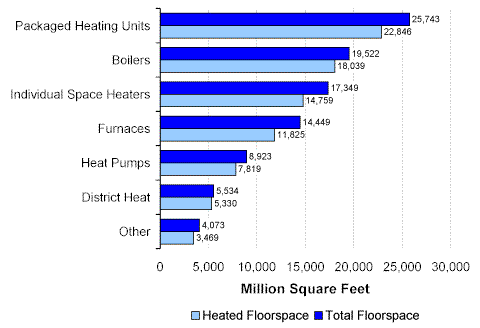
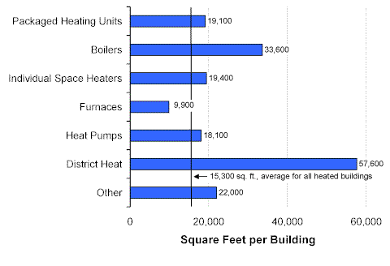
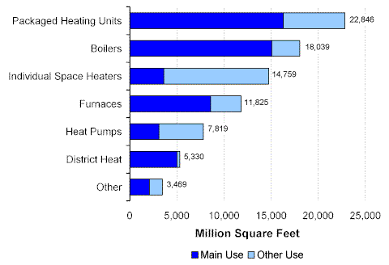

Space-Heating Equipment
The total amount of floorspace in heated commercial buildings was 61,602 million square feet (or 91 percent of 67,338 million square feet, the total amount of floorspace in all commercial buildings). However, within heated buildings, not all of the floorspace was actually heated. A total of 53,812 million square feet was heated (87 percent of the floorspace in heated buildings, and 80 percent of the floorspace in all buildings).
The total amount of floorspace in heated buildings ranged from 25,743 million square feet for buildings that used packaged heating units to 5,534 million square feet for those with district heat systems (Figure 1). Within buildings with packaged units, 22,846 million square feet (or 89 percent of the total floorspace of those buildings) was actually heated. In buildings that used other systems, the percentage of heated floorspace ranged from 82 percent for those that used furnaces, to 96 percent for those with district heating.
Figure 1. Total Floorspace and Heated Floorspace by Type of Heating Equipment, 1999 Energy Information Administration
Commercial Buildings Energy Consumption Survey
Buildings that used boilers or district heat systems were significantly larger than the average of all heated buildings (Figure 2). Buildings with boilers had an average of 33,600 square feet of total floorspace and those with district heat an average of 57,600 square feet.
Figure 2. Average Building Size by Type of Heating Equipment, 1999 Energy Information Administration
Commercial Buildings Energy Consumption Survey
Packaged heating units and boilers were the most widely used types of heating equipment for both main use and total use (Figure 3). Individual space heaters were widely used, but they used for main heating for only 25 percent of the floorspace heated by those units, i.e., the heaters were often used for secondary heating. In contrast, nearly all (94 percent) of the floorspace heated by district heat systems was for main use.
Figure 3. Heating Equipment Used for Main and Other Use, Amount of Heated Floorspace, 1999 Energy Information Administration
Commercial Buildings Energy Consumption Survey
Return to:
“End-Use Equipment”
Specific questions may be directed to:
Alan Swenson
alan.swenson@eia.doe.gov
Release date: May 21, 2002
http://www.eia.gov/consumption/commercial/data/archive/cbecs/char99/heat_equip.html
If you are having any technical problems with this site, please contact the EIA webmaster at wmaster@eia.doe.gov.